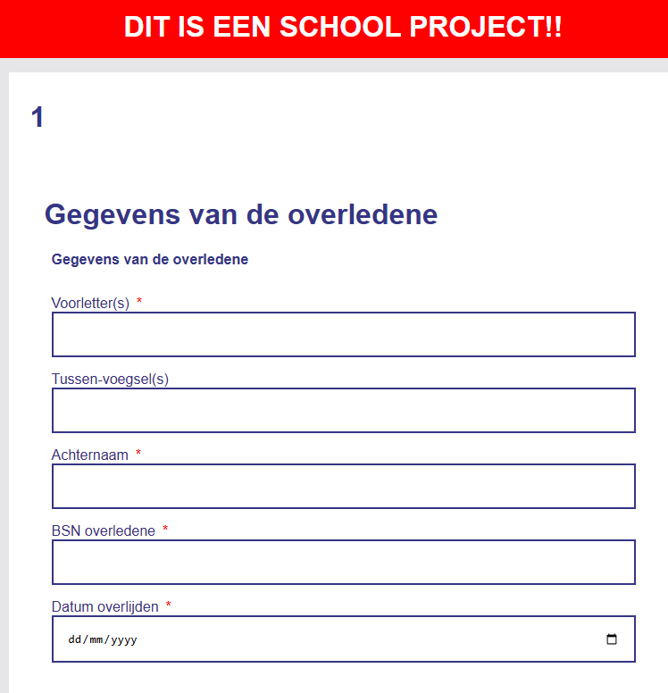
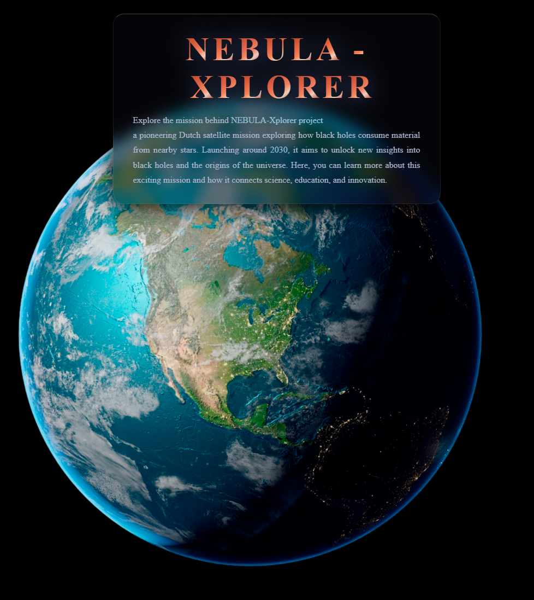
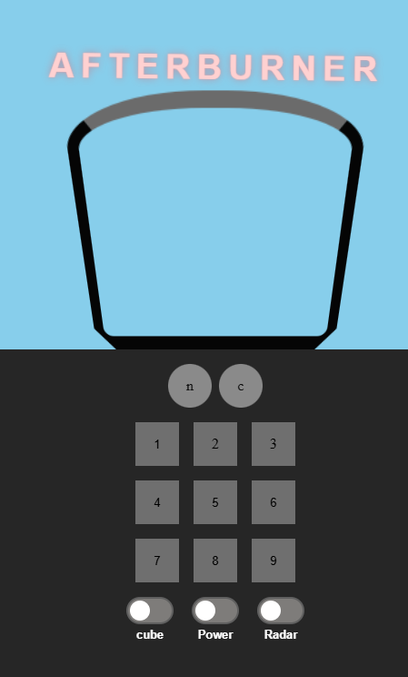
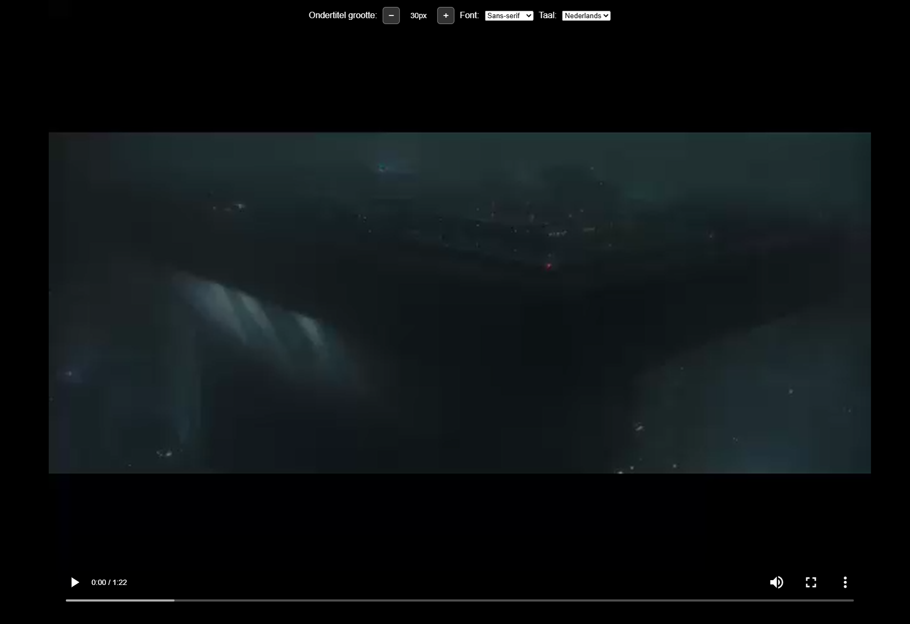

Weekly Nerd #1 — Nils Binder
CSS Grid, stop-motion animaties, mix-blend-mode en view transitions.
Lees verslag →Elke week geven gastdocenten een talk over hun werk en vakgebied. Hieronder mijn verslagen.
CSS Grid, stop-motion animaties, mix-blend-mode en view transitions.
Lees verslag →Hoe browsers werken, rendering engines, defer vs async en browsergeschiedenis.
Lees verslag →Stop using JS for that — native HTML en CSS alternatieven voor veelgebruikte JS-patronen.
Lees verslag →Toegankelijke formulieren bouwen met de NL Design System richtlijnen.
Lees verslag →Digitale onafhankelijkheid, planned obsolescence en de travelling server.
Lees verslag →WCAG-richtlijnen en toegankelijkheid vanuit drie echte gebruikers.
Lees verslag →Een overzicht van de projecten die ik dit jaar heb gemaakt.




[Beschrijving van je leerdoel en hoe je hieraan hebt gewerkt dit semester.]
[Beschrijving van je leerdoel en hoe je hieraan hebt gewerkt dit semester.]
[Beschrijving van je leerdoel en hoe je hieraan hebt gewerkt dit semester.]
[Jouw algemene reflectie op de Weekly Nerd talks dit semester.]
[Jouw reflectie op de hackaton ervaring.]